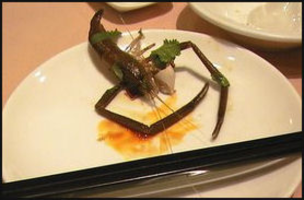

Shrimp Tacos Baby

Description
Camarones, or shrimp as our northern brethren call them, are the spiders of the sea. They're tasty little morsels of buttery goodness that, when cooked expertly, explode in your mouth causing maximum damage. How might we destroy mouths with Camarones? In taco form, of course!
Tacos Camarones begin with sea spiders and end with toppings. Get ready to get crazy, mi abeulita would kill me if she knew I was sharing this recipe with you!!! ah!! Don't kill me granny.
Ingredients
- scramp
- garlic, diced
- butter, Paula Dean style (a lot)
- red cabbage
- mayo
- canned chipotle peppers
- a nice green salsa-- don't use that chunky shit
- a mellow delicious pico de gallo (that's tomato of horse for our uncultured American friends)
- corn tortillas
Steps
- Take a big ol glob a mayo and blend it with them chile peppers. Less mayo, more spicy. More mayo, less spicy. Owie.
- Chop that cabbage into thin slices. We need some zest and color amirite? Oh yeah.
- Throw a saute pan on the stovetop. THROW IT. Turn heat on med-high and let the pan get nice and hot. When it's hot, toss a nice glob of butter in there. Coat that pan. Mmmmmm. Then add your diced garlic and shrimp. Tsssss
- Cook those camarones for 1-2 minutes each side. Make sure their nice n golden brown on both sides when they come off. Bit of a sear. Garlic should be brown and gold and all carmelized on the scramps. MMMMMMMM yeah baby
- For 2 tacos, use 4 tortillas. Pull them shrimps out of the pan and turn the heat down to med-low. Toss two tortillas, stacked on top of each other, into the pan. Flip the stack after about 30 seconds. They should be golden brown and buttery, but not hard! If they're hard, you fucked up. End yourself.
- You've made it this far, woohoo, you're doing fine. You used all the cooking things you'll need. Now! Time to craft the taco. In order from bottom to top on the plate:
- tortillas
- shrimp
- chipotle Mayo
- salsa verde
- pico de gallo
- cabbage
- Serve with one lime wedge per taco, and enjoy! Muah.